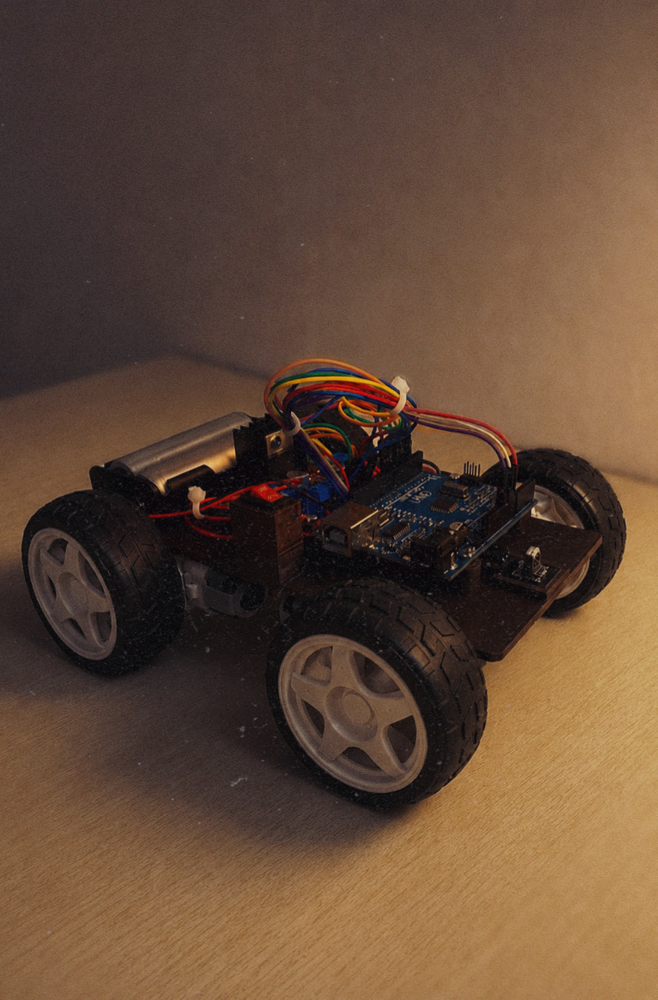

Autonomous Obstacle Avoidance Robot Car is an intelligent robotic vehicle designed to navigate its environment without human intervention. Powered by an Arduino microcontroller, the robot uses sensors to continuously detect obstacles in its path and make real-time decisions to avoid collisions. When an object is detected, the system automatically adjusts the vehicle's direction by controlling its motors, allowing it to move safely through its surroundings. This project combines robotics, embedded systems, sensor technology, and motor control to create a fully autonomous navigation system.
Power-On Initialization:
The Arduino microcontroller, sensors, and motor driver are powered on and initialized for operation.
Environmental Scanning:
The obstacle detection sensor continuously scans the area in front of the robot to identify nearby objects.
Data Collection:
Sensor readings are transmitted to the Arduino for processing and analysis.
Obstacle Detection
The Arduino compares the sensor data with predefined distance thresholds to determine whether an obstacle is present.
Forward Movement:
If no obstacle is detected, the motor driver activates the DC motors, allowing the robot to move forward.
Collision Prevention:
When an obstacle is detected within the specified range, the robot immediately stops to avoid a collision.
Direction Decision
The Arduino evaluates possible paths and determines a suitable direction, such as turning left or right.
Obstacle Avoidance Maneuver
The motors are controlled to rotate the robot toward the selected direction until a clear path is found.
Resume Navigation:
Once the obstacle has been avoided, the robot continues moving forward along the new path.
Continuous Autonomous Operation:
The scanning, detection, decision-making, and navigation cycle repeats continuously, enabling fully autonomous movement and obstacle avoidance.
I gained valuable experience in designing and implementing intelligent embedded systems that can perceive and react to their environment. The project strengthened my understanding of microcontroller programming, sensor integration, motor control, and real-time decision-making algorithms. I learned how to process sensor data, develop autonomous navigation logic, and coordinate hardware and software components to create a fully functional robotic system. Additionally, the project enhanced my problem-solving, debugging, and system integration skills while providing practical exposure to robotics, automation, and autonomous vehicle technologies. This experience deepened my understanding of how smart systems use sensing, computation, and control to interact with the physical world.